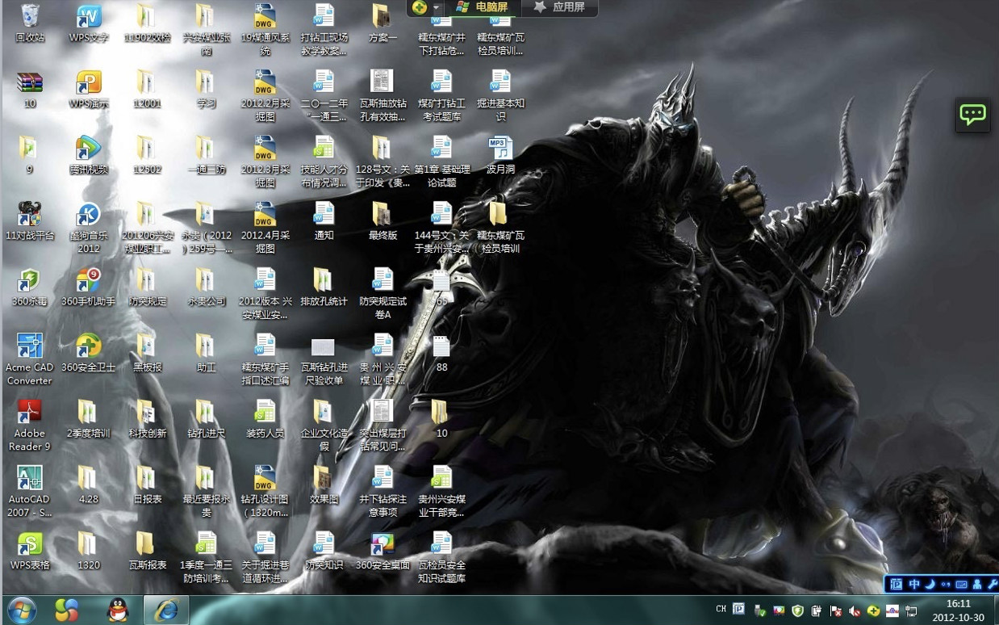
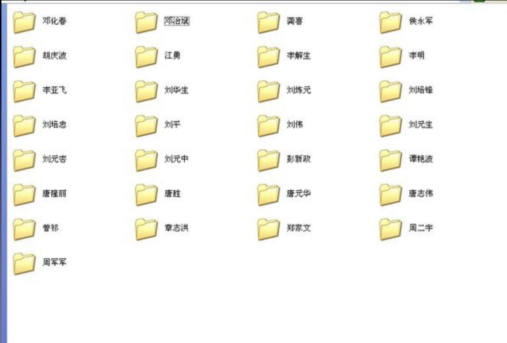
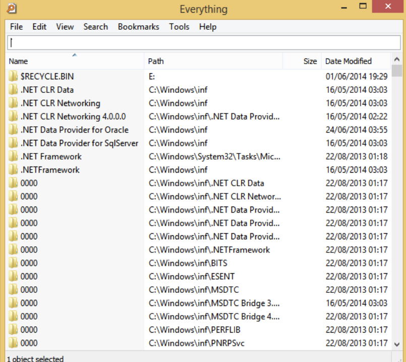

电脑桌面文件超乱？教你 3 大绝招快速整理
2017-9-12
你的电脑桌面看上去是不是这个样子？
如果你有下面几个「坏习惯」，电脑里的文件不乱才怪：
文件层级太深：比如说一个销售数据 Excel 文件存放在「D 盘 – 2017 年 – 大灵通项目 – 西大街门店 – 月报表」这个目录下，看上去一层一层很清晰对吧？但除非你是处女座，否则会很快失去耐心，随便一放就算了。
按文件类型归类文件：Windows 操作系统默认的分类是：我的文档、我的音乐、我的视频……这样按照文件类型归类适合个人电脑，而不是工作电脑。工作电脑里可能 90% 的文件都在「我的文档」里面，所以这样分类就失去了意义
一个文件有多个版本：你要找一个「2016 工作总结.doc」文件，通过文件搜索发现桌面有 1 个、D 盘有 1 个、邮箱附件还有 1 个，那么问题来了：到底哪一个才是最终版本呢？难道要比较最后修改日期？累死了！
很多文件都放在电脑桌面：从微信、邮件附件、QQ、钉钉等各种渠道收到的文件因为还不知道怎么归类，或者要进行下一步的处理，所以都放到桌面。可是突然电脑无法启动了，技术支持部门的人说要格式化 C 盘重装系统，这一下就悲剧了，因为桌面文件夹恰好就在 C 盘，崩溃 ing。
看到这里，我建议大家还是养成几个整理电脑文件的好习惯，让我们工作的时候心情更好一点，效率更高一点。
1. 横向分类，用 MECE 原则
横向分类就像是明确一下每个抽屉放什么样的东西。
工作性质不同分类的方式也不一样，比如：
- 按客户分
- 按项目分
- 按时间分

但这都要遵循一个原则：MECE，这是芭芭拉·名托在《金字塔原理》这本书里提到的分类原则：
MECE，是 Mutually Exclusive Collectively Exhaustive，中文意思是「相互独立，完全穷尽」。也就是对于一个重大的议题，能够做到不重叠、不遗漏的分类，而且能够藉此有效把握问题的核心，并解决问题的方法。
比如对这个世界上的人进行分类：
- 无重复，有遗漏：老年人+中年人+青年人，遗漏了小孩、婴儿等
- 有遗漏，有重复：成年人+男人，遗漏了小女孩，而且成年人中包含了男人
- 有遗漏，有重复：男性+女性+小孩，男性包含了小男孩，女性包含了小女孩
- 无遗漏，无重复：男性+女性
你可以试着用笔纸先对文件夹进行分类，然后再开始整理。
2. 纵向搜索，用 Everything 工具
纵向搜索就像是你出门时从放裤子的抽屉拿出裤子，从放衣服的抽屉拿出衣服。
给大家推荐一个搜索文件的利器：Everything（Windows 下使用，Mac 下用不着），它的特点是：
- 搜索速度快到吓尿；
- 快速下载安装，不到 500k；
- 感觉不到存在，占用系统资源小；
- 新文件也能实时搜索到。
不过 Everything 还做不到对文件内容的搜索。
所以你可以想象这样的场景，当你需要：
- 硬盘空间不够：查找比较大的垃圾文件删除，那么直接搜索文件大小大于多少 MB 的就立刻出现；
- 只大概文件名：Everything 可以模糊查询，找电影、找程序、找文档，都行，不用大概一层一层的文件夹；
- 经常需要找某些文件：比如「工作总结」，可以在 Everything 建立一个书签，下次直接点开这个书签就能找到这些文件。
而且，更重要的是，它是免费的！（用了半天的营销套路，介绍了一个免费软件，哈哈……）
3. 建立行动导向的桌面文件夹
那么，电脑桌面要放些什么？那些 QQ、微信、钉钉、邮件里的临时文件存放到哪？
每一个文件的背后实际上就代表着一件待办事项，比如说财务预算表，其实代表着「审核一下预算是否合适」这件事，所以我建议在桌面建立三个文件夹，你可以看到这三个文件夹都是以行动为导向的：
- Inbox：各个渠道来的临时文件，或者需要处理还未处理的文件，都放到 Inbox 文件夹里，每天下班前清理一次这个文件夹，当开始着手处理这件事时，就挪到「进行中」文件夹；
- 进行中：正在修改、正在回复、等待反馈结果的文件，都放在这个文件夹，完成后，就放入「归档」文件夹；
- 归档快捷方式：通过它可以立刻打开你的「工作文件夹」，把解决掉的文件归档到相关目录下。
结语
我们不是在整理文件，也不是整理桌面，是在整理心情。
想象一下，一上班，打开电脑，看到乱糟糟的电脑桌面，你是什么样的心情？
反之，一打开电脑看见的是干净整洁的桌面，那又是什么心情呢？整理衣柜、收拾家里也会有同样的效果，所以小强建议大家有空的时候把自己的生活、工作环境都整理整理。
文章授权转载自「小强的时间管理」博客，原文链接：电脑桌面太乱了怎么整理？